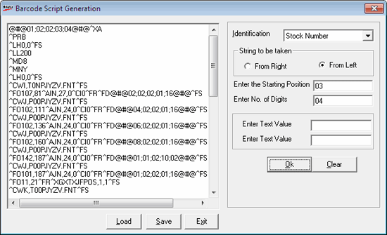

This option is to create a basic template for barcode printing and specify the parameters to be considered while generating a barcode. Design is done collectively by Shoper support personnel, retailer and barcode printer vendor. The Barcode vendor will prepare a barcode parameter based on customer specifications like the length and width of label, number of labels to be printed in a row, etc. These parameters will be interfaced with Shoper fields which are originally in a coded form.
How to reach: Stock > Barcode > Design Label for Barcode Printers
The Barcode Script Generation window is displayed. Click Load to open the barcode script, given by the barcode vendor. Enter the script file name or browse and select the same.
Barcode script, in a text file format, is displayed in the window and can be modified by linking with Shoper database. A few rows displayed in the window specifies the field values to be replaced by fields from Shoper database. Barcode vendor will help to identify which row represents which field.
Note: Script file varies depending on the barcode printers.
A sample of the window is as shown.

Identification: Place the cursor on the line, in the display area, representing the field required to be replaced by the value from the database. Select a field from the list. For example, Stock Number or Retail Price.
String to be taken: To specify the position to be taken for printing the barcode.
From Right: Select to print the value from the right. This option is selected when the field to be mapped is generated. For example, if generated stock number is 0000013, then barcode prints from right of the Stock No., i.e., from 3.
From Left: Select to print the value from the left. This option is selected when the field is user assigned. For example, if user assigned Stock No. is AB0011234, then barcode prints from left, i.e., starting from A.
If you have selected a numeric field in Identification, the following fields are activated.
Enter the Integer Part: The length of the integer part to be printed.
Enter No. of Decimals: The number of decimals to be printed.
If you have selected a string type field in Identification, the following fields are activated.
Enter the Starting Position: The starting position of the field from where the value has to be picked for printing.
Enter No. of Digits: The length or number of digits to be taken from the starting position for printing.
Enter Text Value: Enter the value to be added to barcode, if the field selected in Identification is Text.
Note: Repeat the steps to replace all given barcode parameters with appropriate fields.